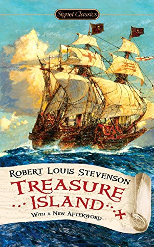

 For sheer storytelling delight and pure adventure, Treasure Island has never been surpassed. From the moment young Jim Hawkins first encounters the sinister Blind Pew at the Admiral Benbow Inn until the climactic battle for treasure on a tropic isle, the novel creates scenes and characters that have fired the imaginations of generations of readers. Written by a superb prose stylist, a master of both action and atmosphere, the story centers upon the conflict between good and evil - but in this case a particularly engaging form of evil. It is the villainy of that most ambiguous rogue Long John Silver that sets the tempo of this tale of treachery, greed, and daring. Designed to forever kindle a dream of high romance and distant horizons, Treasure Island is, in the words of G. K. Chesterton, 'the realization of an ideal, that which is promised in its provocative and beckoning map; a vision not only of white skeletons but also green palm trees and sapphire seas.' G. S. Fraser terms it 'an utterly original book' and goes on to write: 'There will always be a place for stories like Treasure Island that can keep boys and old men happy.'